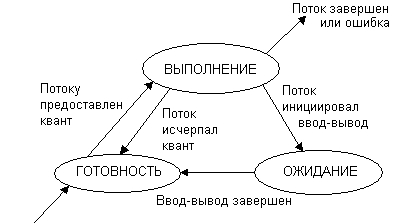
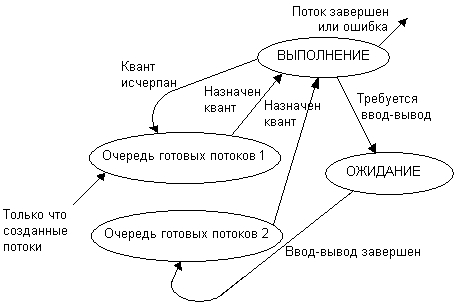
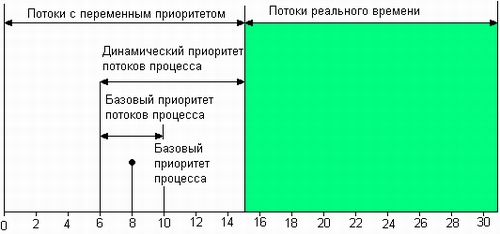

1 Алгоритмы планирования
Планирование процессов включает в себя решение следующих задач:
- определение момента времени для смены выполняемого процесса;
- выбор процесса на выполнение из очереди готовых процессов;
- переключение контекстов "старого" и "нового" процессов.
Первые две задачи решаются программными средствами, а последняя в значительной степени аппаратно.
Существует множество различных алгоритмов планирования процессов, по разному решающих вышеперечисленные задачи, преследующих различные цели и обеспечивающих различное качество мультипрограммирования. Среди этого множества алгоритмов рассмотрим подробнее две группы наиболее часто встречающихся алгоритмов: алгоритмы, основанные на квантовании, и алгоритмы, основанные на приоритетах.
1.1 Квантование
Алгоритмы планирования
В соответствии с алгоритмами, основанными на квантовании, смена активного процесса происходит, если:
- процесс завершился и покинул систему,
- произошла ошибка,
- процесс перешел в состояние ОЖИДАНИЕ,
- исчерпан квант процессорного времени, отведенный данному процессу.
Процесс, который исчерпал свой квант, переводится в состояние ГОТОВНОСТЬ и ожидает, когда ему будет предоставлен новый квант процессорного времени, а на выполнение в соответствии с определенным правилом выбирается новый процесс из очереди готовых. Таким образом, ни один процесс не занимает процессор надолго, поэтому квантование широко используется в системах разделения времени.
Чем больше квант, тем выше вероятность того, что потоки завершатся в результате первого же цикла выполнения, и тем менее явной становится зависимость времени ожидания потоков от их времени выполнения. При достаточно большом кванте алгоритм квантования вырождается в алгоритм последовательной обработки, присущий однопрограммным системам, при котором время ожидания задачи в очереди вообще никак не зависит от ее длительности.
Кванты, выделяемые одному потоку, могут быть фиксированной величины, а могут и изменяться в разные периоды жизни потока. Пусть, например, первоначально каждому потоку назначается достаточно большой квант, а величина каждого следующего кванта уменьшается до некоторой заранее заданной величины. В таком случае преимущество получают короткие задачи, которые успевают выполняться в течение первого кванта, а длительные вычисления будут проводиться в фоновом режиме. Можно представить себе алгоритм планирования, в котором каждый следующий квант, выделяемый определенному потоку, больше предыдущего. Такой подход позволяет уменьшить накладные расходы на переключение задач в том случае, когда сразу несколько задач выполняют длительные вычисления.
Потоки получают для выполнения квант времени, но некоторые из них используют его не полностью, например из-за необходимости выполнить ввод или вывод данных. В результате возникает ситуация, когда потоки с интенсивными обращениями к вводу-выводу используют только небольшую часть выделенного им процессорного времени. Алгоритм планирования может исправить эту «несправедливость». В качестве компенсации за неиспользованные полностью кванты потоки получают привилегии при последующем обслуживании. Для этого планировщик создает две очереди готовых потоков. Очередь 1 образована потоками, которые пришли в состояние готовности в результате исчерпания кванта времени, а очередь 2 — потоками, у которых завершилась операция ввода-вывода. При выборе потока для выполнения прежде всего просматривается вторая очередь, и только если она пуста, квант выделяется потоку из первой очереди.
Многозадачные ОС теряют некоторое количество процессорного времени для выполнения вспомогательных работ во время переключения контекстов задач. При этом запоминаются и восстанавливаются регистры, флаги и указатели стека, а также проверяется статус задач для передачи управления. Затраты на эти вспомогательные действия не зависят от величины кванта времени, поэтому чем больше квант, тем меньше суммарные накладные расходы, связанные с переключением потоков.
1.2 Приоритеты
Алгоритмы планирования
Другая группа алгоритмов использует понятие приоритет процесса. Приоритет - это число, характеризующее степень привилегированности процесса при использовании ресурсов вычислительной машины, в частности, процессорного времени: чем выше приоритет, тем выше привилегии.
Приоритет может выражаться целыми или дробными, положительным или отрицательным значением.Чем выше привилегии процесса, тем меньше времени он будет проводить в очередях. Приоритет может назначаться директивно администратором системы в зависимости от важности работы или внесенной платы, либо вычисляться самой ОС по определенным правилам, он может оставаться фиксированным на протяжении всей жизни процесса либо изменяться во времени в соответствии с некоторым законом. В последнем случае приоритеты называются динамическими.
В большинстве операционных систем, поддерживающих потоки, приоритет потока непосредственно связан с приоритетом процесса, в рамках которого выполняется данный поток. Приоритет процесса назначается операционной системой при его создании. Значение приоритета включается в описатель процесса и используется при назначении приоритета потокам этого процесса. При назначении приоритета вновь созданному процессу ОС учитывает, является этот процесс системным или прикладным, каков статус пользователя, запустившего процесс, было ли явное указание пользователя на присвоение процессу определенного уровня приоритета. Поток может быть инициирован не только по команде пользователя, но и в результате выполнения системного вызова другим потоком. В этом случае при назначении приоритета новому потоку ОС должна принимать во внимание значение параметров системного вызова.
Во многих ОС предусматривается возможность изменения приоритетов в течение жизни потока. Изменение приоритета могут происходить по инициативе самого потока, когда он обращается с соответствующим вызовом к операционной системе, или по инициативе пользователя, когда он выполняет соответствующую команду. Кроме того, ОС сама может изменять приоритеты потоков в зависимости от ситуации, складывающейся в системе. В последнем случае приоритеты называются динамическими в отличие от неизменяемых, фиксированных, приоритетов.
От того, какие приоритеты назначены потокам, существенно зависит эффективность работы всей вычислительной системы. В современных ОС во избежание разбалансировки системы, которая может возникнуть при неправильном назначении приоритетов, возможности пользователей влиять на приоритеты процессов и потоков стараются ограничивать. При этом обычные пользователи, как правило, не имеют права повышать приоритеты своим потокам, это разрешено делать (да и то в определенных пределах) только администраторам. В большинстве же случаев ОС присваивает приоритеты потокам по умолчанию.
В качестве примера рассмотрим схему назначения приоритетов потокам, принятую в операционной системе Windows NT. В системе определено 32 уровня приоритетов и два класса потоков — потоки реального времени и потоки с переменными приоритетами. Диапазон от 1 до 15 включительно отведен для потоков с переменными приоритетами, а от 16 до 31 — для более критичных ко времени потоков реального времени (приоритет 0 зарезервирован для системных целей).

При создании процесса он в зависимости от класса получает по умолчанию базовый приоритет в верхней5 или нижней части диапазона. Базовый приоритет процесса в дальнейшем может быть повышен или понижен операционной системой. Первоначально Поток получает значение базового приоритета из диапазона базового приоритета процесса, в котором он был создан. Пусть, например, значение базового приоритета некоторого процесса равно К. Тогда все потоки данного процесса получат базовые приоритеты из диапазона [К-2, К+2]. Отсюда видно, что, изменяя базовый приоритет процесса, ОС может влиять на базовые приоритеты его потоков.
Во многих операционных системах алгоритмы планирования построены с использованием как квантования, так и приоритетов. Например, в основе планирования лежит квантование, но величина кванта и/или порядок выбора процесса из очереди готовых определяется приоритетами процессов.
2 Алгоритмы с вытеснением и без
Существует два основных типа процедур планирования процессов - вытесняющие (preemptive) и невытесняющие (non-preemptive).
Non-preemptive multitasking - невытесняющая многозадачность - это способ планирования процессов, при котором активный процесс выполняется до тех пор, пока он сам, по собственной инициативе, не отдаст управление планировщику операционной системы для того, чтобы тот выбрал из очереди другой, готовый к выполнению процесс.
Preemptive multitasking - вытесняющая многозадачность - это такой способ, при котором решение о переключении процессора с выполнения одного процесса на выполнение другого процесса принимается планировщиком операционной системы, а не самой активной задачей.
Основным различием между preemptive и non-preemptive вариантами многозадачности является степень централизации механизма планирования задач. При вытесняющей многозадачности механизм планирования задач целиком сосредоточен в операционной системе, и программист пишет свое приложение, не заботясь о том, что оно будет выполняться параллельно с другими задачами. При этом операционная система выполняет следующие функции: определяет момент снятия с выполнения активной задачи, запоминает ее контекст, выбирает из очереди готовых задач следующую и запускает ее на выполнение, загружая ее контекст.
При невытесняющей многозадачности механизм планирования распределен между системой и прикладными программами. Прикладная программа, получив управление от операционной системы, сама определяет момент завершения своей очередной итерации и передает управление ОС с помощью какого-либо системного вызова, а ОС формирует очереди задач и выбирает в соответствии с некоторым алгоритмом (например, с учетом приоритетов) следующую задачу на выполнение. Такой механизм создает проблемы как для пользователей, так и для разработчиков.
Для пользователей это означает, что управление системой теряется на произвольный период времени, который определяется приложением (а не пользователем). Если приложение тратит слишком много времени на выполнение какой-либо работы, например, на форматирование диска, пользователь не может переключиться с этой задачи на другую задачу, например, на текстовый редактор, в то время как форматирование продолжалось бы в фоновом режиме. Эта ситуация нежелательна, так как пользователи обычно не хотят долго ждать, когда машина завершит свою задачу.
Поэтому разработчики приложений для non-preemptive операционной среды, возлагая на себя функции планировщика, должны создавать приложения так, чтобы они выполняли свои задачи небольшими частями. Например, программа форматирования может отформатировать одну дорожку дискеты и вернуть управление системе. После выполнения других задач система возвратит управление программе форматирования, чтобы та отформатировала следующую дорожку. Подобный метод разделения времени между задачами работает, но он существенно затрудняет разработку программ и предъявляет повышенные требования к квалификации программиста. Программист должен обеспечить "дружественное" отношение своей программы к другим выполняемым одновременно с ней программам, достаточно часто отдавая им управление. Крайним проявлением "недружественности" приложения является его зависание, которое приводит к общему краху системы. В системах с вытесняющей многозадачностью такие ситуации, как правило, исключены, так как центральный планирующий механизм снимет зависшую задачу с выполнения.
Однако распределение функций планировщика между системой и приложениями не всегда является недостатком, а при определенных условиях может быть и преимуществом, потому что дает возможность разработчику приложений самому проектировать алгоритм планирования, наиболее подходящий для данного фиксированного набора задач. Так как разработчик сам определяет в программе момент времени отдачи управления, то при этом исключаются нерациональные прерывания программ в "неудобные" для них моменты времени. Кроме того, легко разрешаются проблемы совместного использования данных: задача во время каждой итерации использует их монопольно и уверена, что на протяжении этого периода никто другой не изменит эти данные. Существенным преимуществом non-preemptive систем является более высокая скорость переключения с задачи на задачу.
Примером эффективного использования невытесняющей многозадачности является файл-сервер NetWare, в котором, в значительной степени благодаря этому, достигнута высокая скорость выполнения файловых операций. Менее удачным оказалось использование невытесняющей многозадачности в операционной среде Windows 3.х.